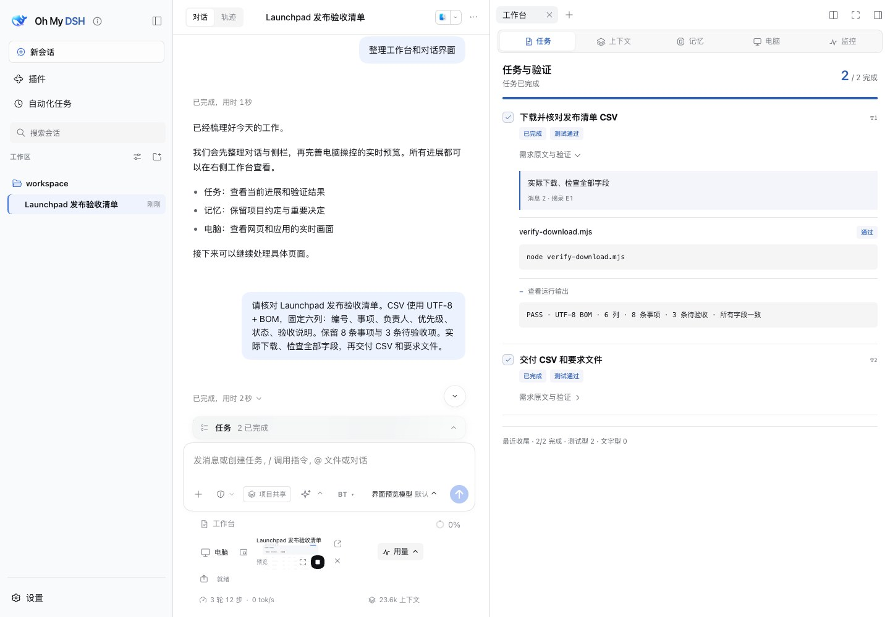
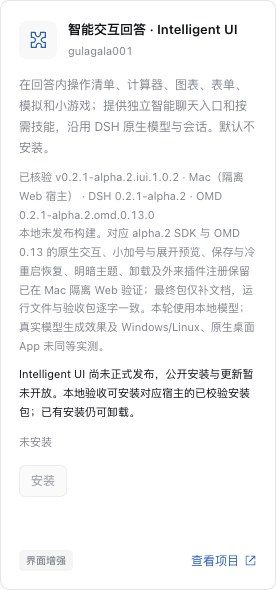

理解要求
明确任务目标，保留约定和材料，带上当前工作的上下文。
同一份发布清单：3 项待验收，2 项验证完成，下载文件已逐项核对。
点击画面查看原图01 / CONTEXT & MEMORY
从一份发布清单出发，看要求如何被保留、回查并用于验收。
后台整理历史，需要精确细节时回到原话和附件。
保留负责人、优先级和未验收项；CSV 固定六列，使用 UTF-8 + BOM。原始消息成为后续验收的依据。

历史通过存档、压缩与回查持续积累；当前模型窗口仍有容量限制。了解上下文机制
02 / OPENCU
在这次验收里，助手打开清单、筛出未完成项，再核对实际下载文件。浏览器和桌面操作，都可以放进原生对话。
了解 OpenCU通过 @Browser、已连接的 @Chrome 或应用引用，把目标带进当前任务。
实时画面与操作记录并行呈现。停止、人工接手，再恢复助手控制。
03 / SYSTEM PROMPTS
吸收 Codex 与 Claude Code 的优质结构，根据 DSH 当前工具、权限和执行模式适配。让要求、行动与结果彼此衔接。
查看适配方式与来源明确任务目标，保留约定和材料，带上当前工作的上下文。
按真实可用的工具与权限推进，结合当前模式装配执行说明。
将运行结果与原始要求对应起来，检查完成情况与实际证据。
04 / MAKE IT YOURS
四套完整原生主题，外加 OMD 默认外观。
布局、字体、侧栏与工作台一起设计，明暗都完整。
05 / PURPOSE-BUILT TOOLS
从整理想法，到深入执行，再到核对收尾。
为日常工作补齐几件真正用得上的工具。
06 / PLUGIN ECOSYSTEM
推荐插件标明用途、核验状态和适配版本，跟随 DSH 与 OMD 持续维护，减少你反复排查兼容问题的负担。
你也可以提交想用的插件。
一个仓库地址，一句用途，就能开始。

实拍：目录中的一项已核验插件。自动更新默认关闭。
READY WHEN YOU ARE
当前配对：DSH 0.2.1-alpha.1 · Oh My DSH 0.2.1-alpha.1.omd.0.10.0
DSH 0.2.1-alpha.1 的官方桌面安装包尚待发布。现有 rc.2 桌面安装 Oh My DSH 0.2.0-rc.2.omd.0.10.0，避免混装。
需要 Node.js ≥22.19、pnpm 11.23.0 与 Git；Windows 使用 PowerShell 7。
npx --yes @deepseek-ai/dsh@0.2.1-alpha.1 plugin --profile web add github:gulagala001/oh-my-dsh#v0.2.1-alpha.1.omd.0.10.0
npx --yes @deepseek-ai/dsh@0.2.1-alpha.1 --profile web打开启动时打印的登录链接，新建会话选择 Oh My DSH。已有环境沿用原 profile、数据目录与端口。
Oh My DSH 是 DeepSeek Harness 的增强插件，沿用宿主的模型、会话、工具循环和技能。安装在现有 DSH 桌面或 Web 环境里即可使用。
通过持续存档、异步压缩和按需回查延伸任务历史。当前模型窗口仍然有限；摘要用于继续工作，用户原话和原始附件留档，在需要精确内容时重新读取。查看机制说明 ↗
可以继续使用已有模型配置。模型需要支持原生工具调用；理解截图还需要图像输入能力。插件不附带模型账号，主题也不提供对应品牌的账号服务。
上下文、主题、任务、内置浏览器等能力支持 Windows、macOS 和 Linux。原生桌面与窗口分享支持 macOS 14+、Windows 10 2004+，首次使用需完成相应系统准备。平台与运行条件 ↗
插件将 Oh My DSH 设为默认 Agent preset，默认配置完整文件与命令访问，并关闭执行审批。profile 的显式覆盖优先。安装前请备份已有配置与数据。